Part 19 ggplot2 package
Graphing package inspired by the Grammar of Graphics work of Leland Wilkinson.
A tool that enables to concisely describe the components of a graphic.
Why ggplot2 ?
- Flexible
- Customizable
- Pretty !
- Well documented
We will see:
- Scatter plots
- Box plots
- Dot plots
- Bar plots
- Histograms
- How to save plots
- Volcano plots
19.1 Getting started
Load package:
library(ggplot2)- All ggplots start with a base layer created with the ggplot() function:
ggplot(data=dataframe, mapping=aes(x=column1, y=column2))The base layer is setting the grounds but NOT plotting anything:
- You then add a layer (with the + sign) that describes what kind of plot you want:
- geom_point()
- geom_bar()
- geom_histogram()
- geom_boxplot()
- …
- And then you will add one layer at a time to add more features to your plot!
19.2 Scatter plot
# Example of a scatter plot: add the geom_point() layer
ggplot(data=dataframe, mapping=aes(x=column1, y=column2)) + geom_point()- Example of a simple scatter plot:
# Create a data frame
df1 <- data.frame(sample1=rnorm(200), sample2=rnorm(200))
# Plot !
ggplot(data= df1 , mapping=aes(x=sample1, y=sample2)) +
geom_point()
- Add layers to that object to customize the plot:
- ggtitle to add a title
- geom_vline to add a vertical line
- etc.
ggplot(data= df1 , mapping=aes(x=sample1, y=sample2)) +
geom_point() +
ggtitle(label="my first ggplot") +
geom_vline(xintercept=0)
Bookmark that ggplot2 reference and that good cheatsheet for some of the ggplot2 options.
- You can save the plot in an object at any time and add layers to that object:
# Save in an object
p <- ggplot(data= df1 , mapping=aes(x=sample1, y=sample2)) +
geom_point()
# Add layers to that object
p + ggtitle(label="my first ggplot")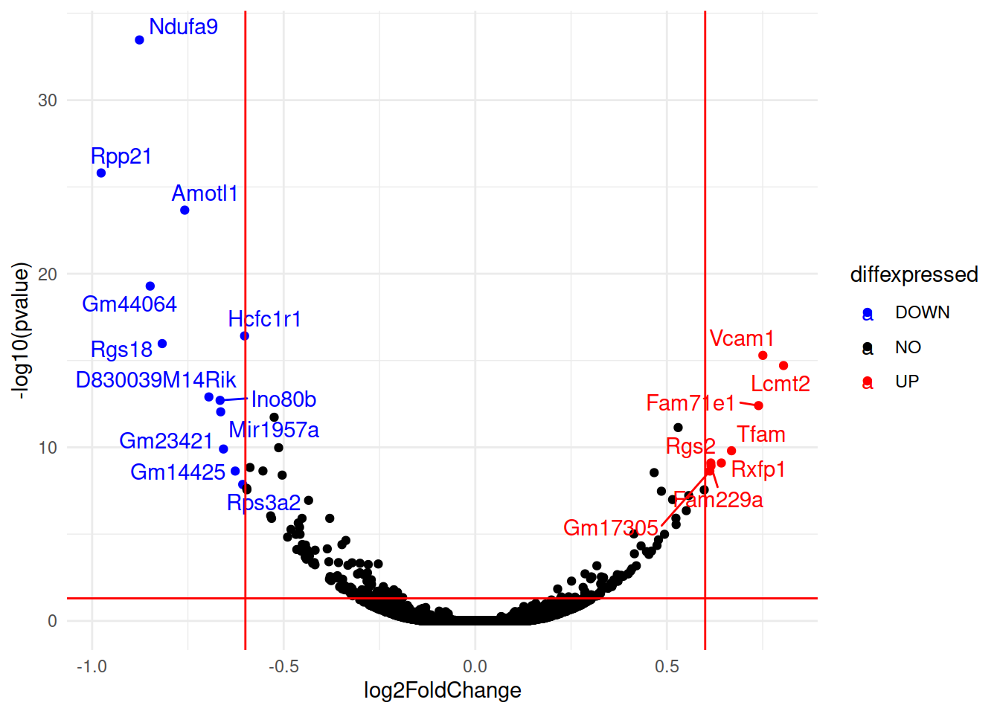
- What is inside the aes (aesthetics)function ?
- Anything that varies according to your data !
- Columns with values to be plotted.
- Columns with which you want to, for example, color the points.
- Anything that varies according to your data !
Color all points in red (not depending on the data):
ggplot(data=df1 , mapping=aes(x=sample1, y=sample2)) +
geom_point(color="red") Color the points according to another column in the data frame:
# Build a data frame from df1: add a column with "yes" and "no"
df2 <- data.frame(df1, grouping=rep(c("yes", "no"), c(80, 120)))
# Plot and add the color parameter in the aes():
pscat <- ggplot(data=df2, mapping=aes(x=sample1, y=sample2, color=grouping)) +
geom_point()
pscat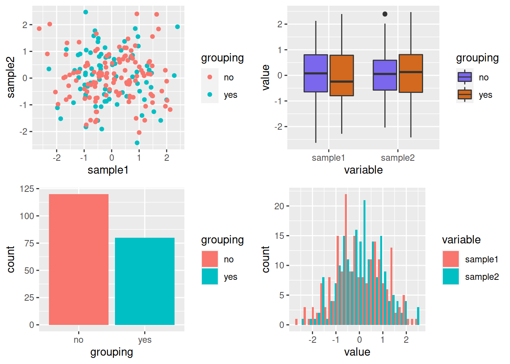
19.3 Box plots
- Simple boxplot showing the data distribution of sample 1:
ggplot(data=df2, mapping=aes(x="", y=sample1)) + geom_boxplot()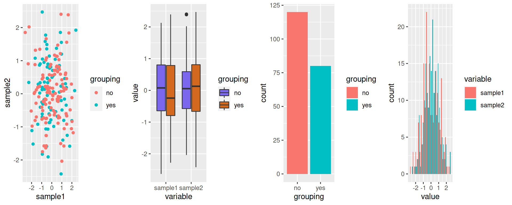
- Split the data into 2 boxes:
ggplot(data=df2, mapping=aes(x=grouping, y=sample1)) + geom_boxplot()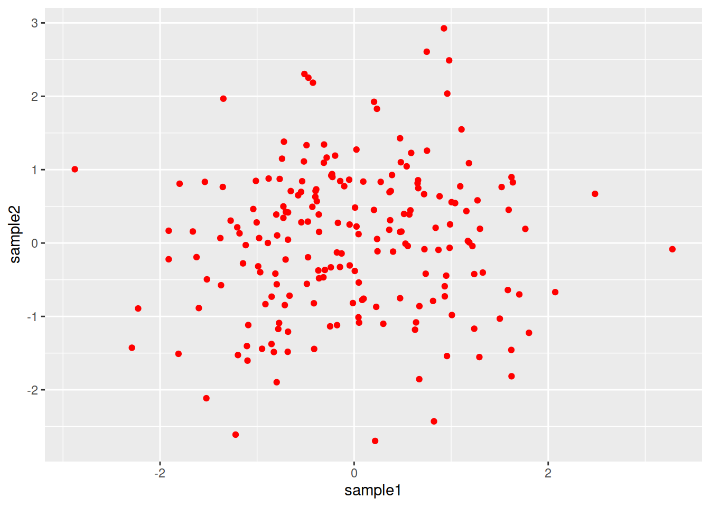
- What if you want to plot both sample1 and sample2 ?
You need to convert into a long format
What is the long format ?

Plotting both sample1 and sample2:
# install package reshape2
install.packages("reshape2")# load package
library("reshape2")
# convert to long format
df_long <- melt(data=df2)
# all numeric values are organized into only one column: value
# plot:
ggplot(data=df_long, mapping=aes(x=variable, y=value)) +
geom_boxplot()- What if now you also want to see the distribution of “yes” and “no” in both sample1 and sample2 ?
Integrate a parameter to the aes()
# Either color (color of the box border)
ggplot(data=df_long, mapping=aes(x=variable, y=value, color=grouping)) +
geom_boxplot()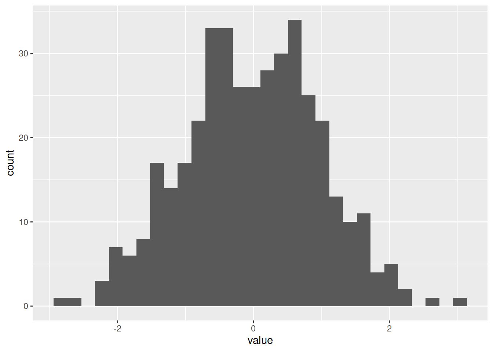
# Or fill (color inside the box)
ggplot(data=df_long, mapping=aes(x=variable, y=value, fill=grouping)) +
geom_boxplot()Do you want to change the default colors?
- Integrate either layer:
- scale_color_manual() for the boxes border color
- scale_fill_manual() for the boxes color (inside)
pbox_fill <- ggplot(data=df_long, mapping=aes(x=variable, y=value, fill=grouping)) +
geom_boxplot() +
scale_fill_manual(values=c("slateblue2", "chocolate"))
pbox_fill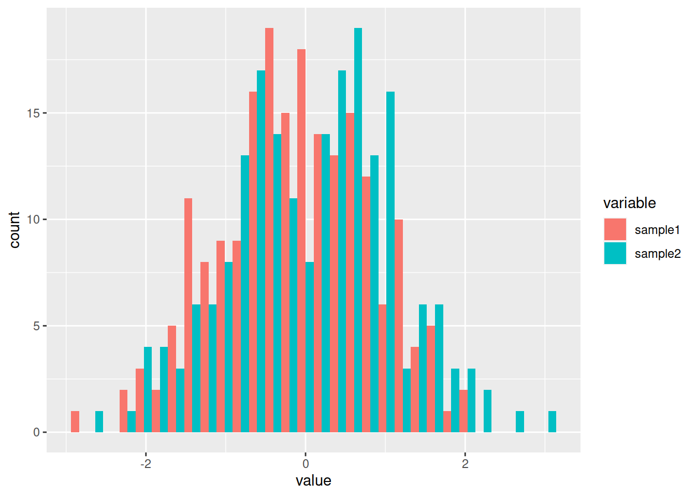
pbox_col <- ggplot(data=df_long, mapping=aes(x=variable, y=value, color=grouping)) +
geom_boxplot() +
scale_color_manual(values=c("slateblue2", "chocolate"))
pbox_col19.4 Dot plots
Example of the expression of a gene in 6 samples: 2 experimental groups in triplicates.
# create a named vector with the expression of a gene
mygene <- c(8.1, 8.2, 8.6, 8.7, 9.4, 8.5)
# the names of each element of the vector are sample names
names(mygene) <- c("KO1", "KO2", "KO3", "WT1", "WT2", "WT3")
# transform to long format
mygenelong <- melt(data=mygene)
# add new columns containing sample names and experimental groups
mygenelong$sample_name <- rownames(mygenelong)
mygenelong$group <- gsub("[1-3]{1}", "", mygenelong$sample_name)
# dot plot
# add labels with "label" in the aes() and layer geom_text()
# nudge_x adjust the labels horizontally
pdot <- ggplot(data=mygenelong, mapping=aes(x=group, y=value, col=group, label=sample_name)) +
geom_point() +
geom_text(nudge_x=0.2)
pdot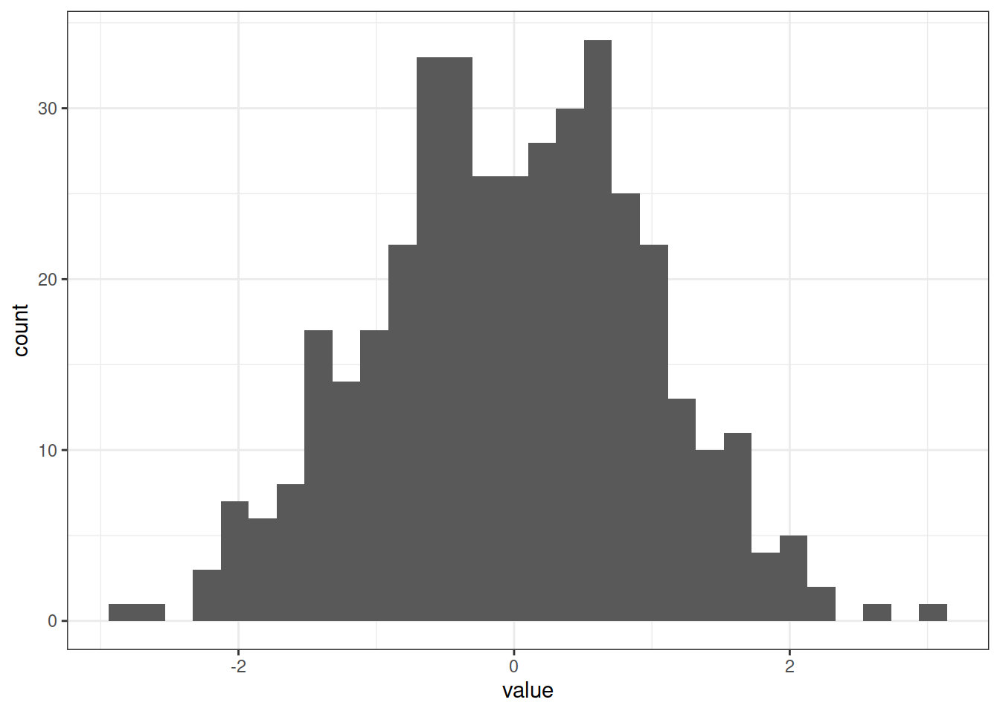
- Add more layers:
- xlab() to change the x axis label
- ylab() to change the y axis label
- theme to manage the legend
pdot + xlab(label="Experimental group") +
ylab(label="Normalized expression (log2)") +
ggtitle(label="Expression of gene 1") +
theme_bw() +
theme(legend.position="none")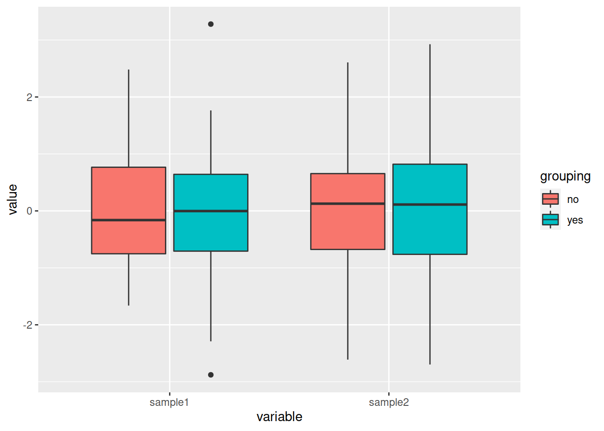
19.5 Bar plots
# A simple bar plot
ggplot(data=df2, mapping=aes(x=grouping)) + geom_bar()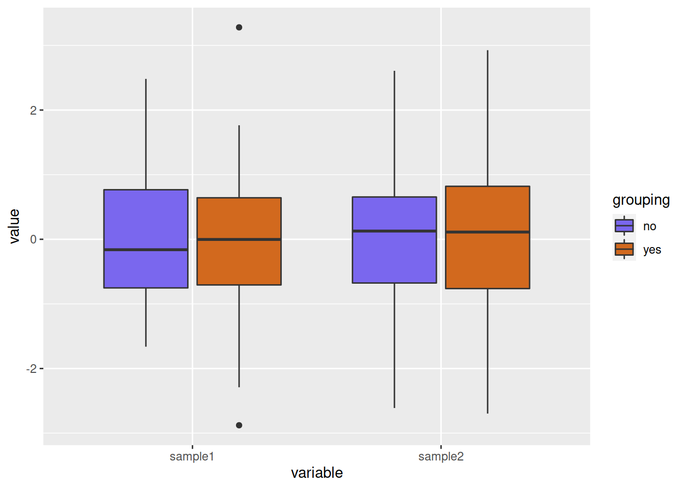
- Customize:
- scale_x_discrete is used to handle x-axis title and labels
- coord_flip swaps the x and y axis
# Save the plot in the object "p"
pbar <- ggplot(data=df2, mapping=aes(x=grouping, fill=grouping)) +
geom_bar()
pbar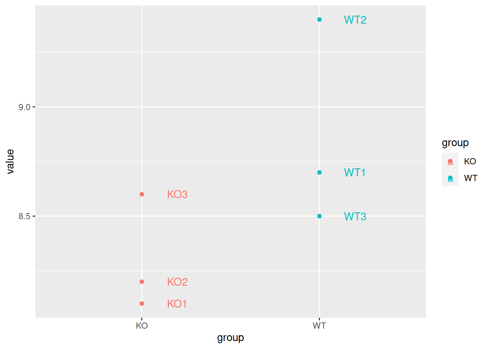
# Change x axis label with scale_x_discrete and change order of the bars:
p2 <- pbar + scale_x_discrete(name="counts of yes / no", limits=c("yes", "no"))
p2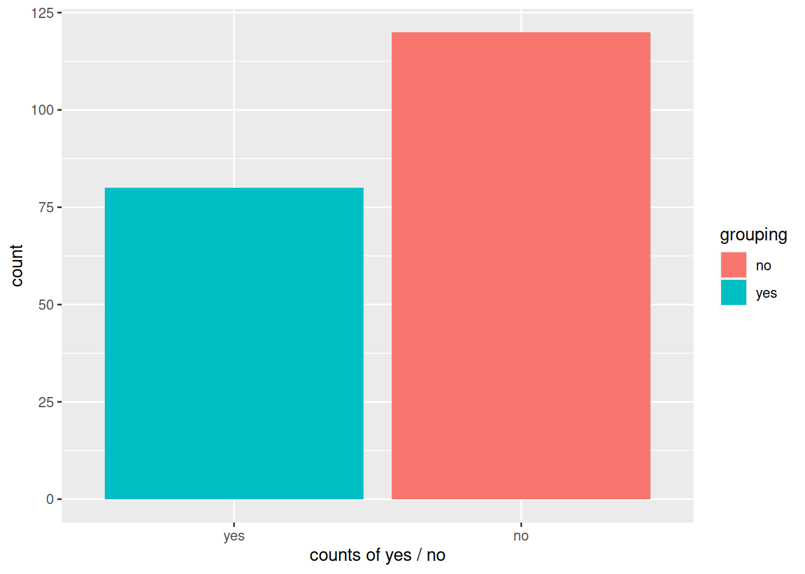
# Swapping x and y axis with coord_flip():
p3 <- p2 + coord_flip()
p3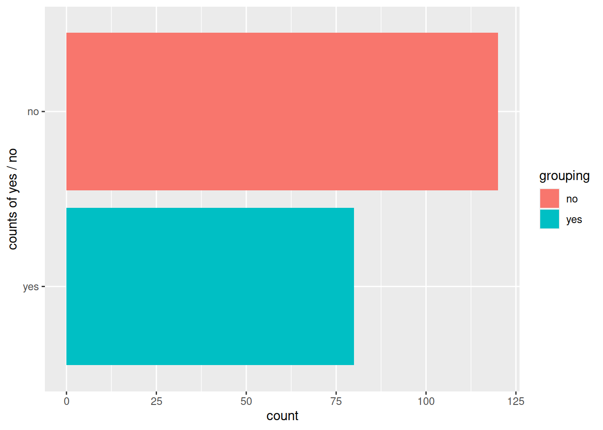
# Change fill
p4 <- p3 + scale_fill_manual(values=c("yellow", "cyan"))
p4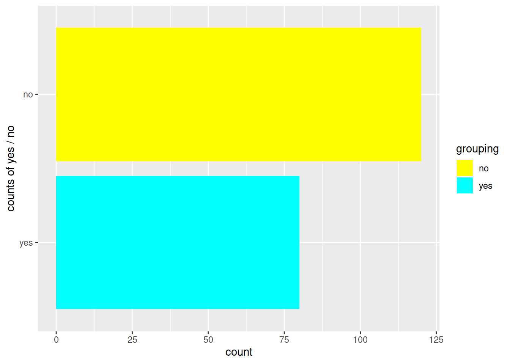
19.5.1 Bar plots with error bars
We can create error bars on barplots.
Let’s create a toy data set, that contains 7 independent qPCR measurements for 3 genes:
pcr <- data.frame(Dkk1=c(18.2, 18.1, 17.8, 17.85, 18.6, 12.4, 10.7),
Pten=c(15.1,15.2, 15.0, 15.6, 15.3, 14.8, 15.9),
Tp53=c(9.1, 9.9, 9.25, 8.7, 8.8, 9.3, 7.8))The height of the bar will represent the average qPCR measurement. The error bar will represent the average - standard deviation on the lowe part, and the average + standard deviation on the high part.
We need to create a data frame that summarizes these values:
pcr_summary <- data.frame(average=apply(pcr, 2, mean),
standard_deviation=apply(pcr, 2, sd),
genes=colnames(pcr))And now we can plot!
ggplot(pcr_summary, aes(x=genes, y=average, fill=genes)) +
geom_bar(stat = "identity") +
geom_errorbar(aes(ymin=average-standard_deviation, ymax=average+standard_deviation), colour="black", width=.1) 
19.6 Histograms
Simple histogram on one sample (using the df2 data frame):
ggplot(data=df1, mapping=aes(x=sample1)) + geom_histogram()## `stat_bin()` using `bins = 30`. Pick better value with `binwidth`.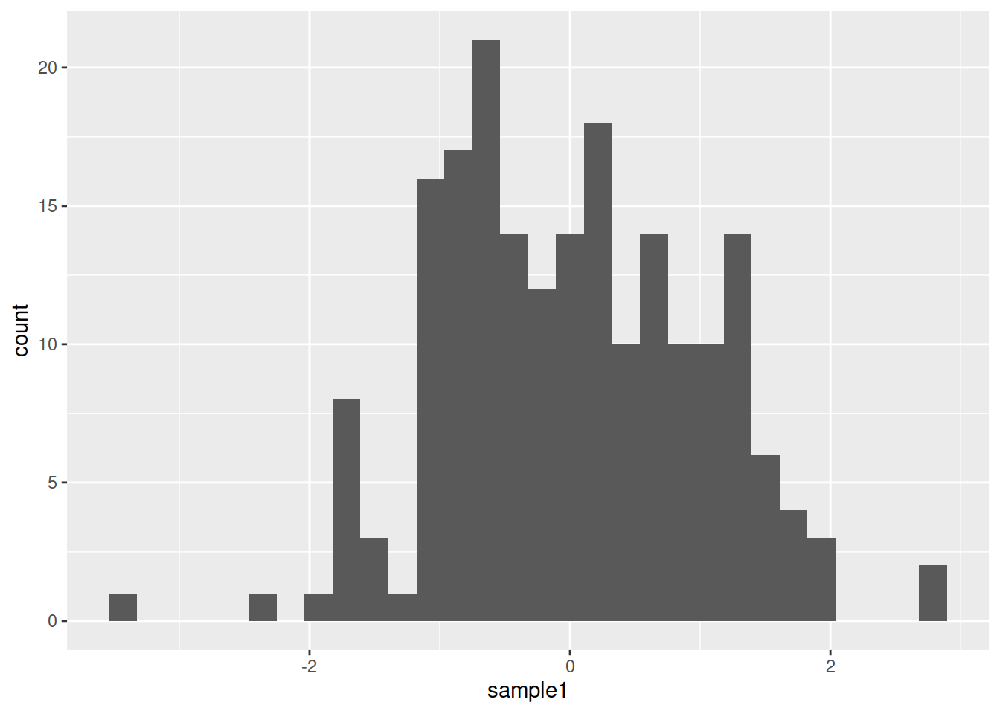
Histogram on more samples (using df_long):
ggplot(data=df_long, mapping=aes(x=value)) + geom_histogram()## `stat_bin()` using `bins = 30`. Pick better value with `binwidth`.
Split the data per sample (“variable” column that represents here the samples):
ggplot(data=df_long, mapping=aes(x=value, fill=variable)) + geom_histogram()## `stat_bin()` using `bins = 30`. Pick better value with `binwidth`.By default, the histograms are stacked: change to position dodge (side by side):
phist <- ggplot(data=df_long, mapping=aes(x=value, fill=variable)) +
geom_histogram(position='dodge')
phist## `stat_bin()` using `bins = 30`. Pick better value with `binwidth`.19.7 About themes
You can change the default global theme (background color, grid lines etc. all non-data display):
# go back to a previous plot
p <- ggplot(data=df_long, mapping=aes(x=value)) + geom_histogram()
# Try different themes
p + theme_bw()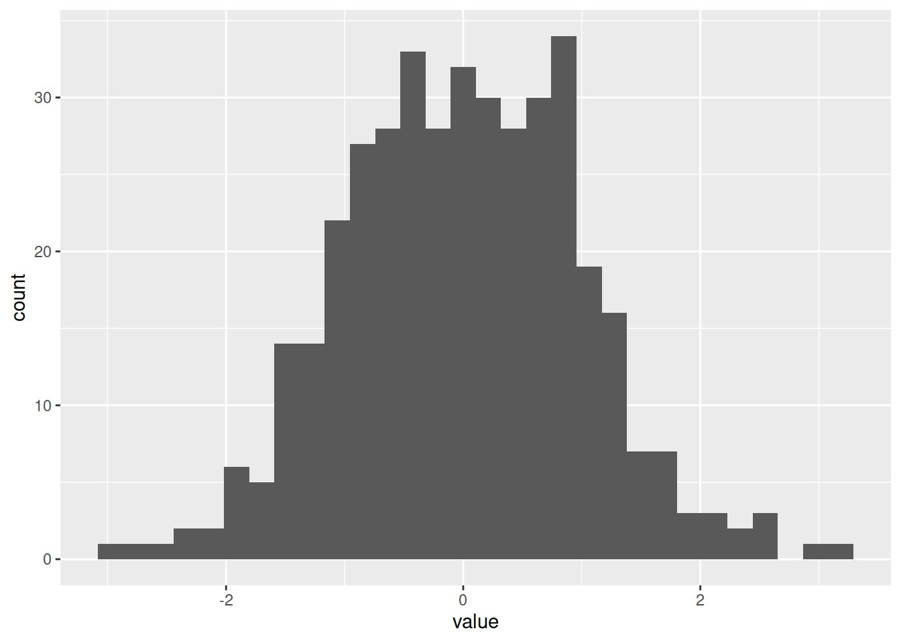
p + theme_minimal()p + theme_void()p + theme_grey()p + theme_dark()p + theme_light() 19.8 Saving plots in files
- The same as for regular plots applies:
png("myggplot.png")
p
dev.off()- You can also use the ggplot2 ggsave function:
# By default, save the last plot that was produced
ggsave(filename="lastplot.png")
# You can pick which plot you want to save:
ggsave(filename="myplot.png", plot=p)
# Many different formats are available:
# "eps", "ps", "tex", "pdf", "jpeg", "tiff", "png", "bmp", "svg", "wmf"
ggsave(filename="myplot.ps", plot=p, device="ps")
# Change the height and width (and their unit):
ggsave(filename="myplot.pdf",
width = 20,
height = 20,
units = "cm")- You can also organize several plots on one page
- One way is to use the gridExtra package:
- ncol, nrow: arrange plots in such number of columns and rows
install.packages("gridExtra")# load package
library(gridExtra)
# 2 rows and 2 columns
grid.arrange(pscat, pbox_fill, pbar, phist, nrow=2, ncol=2)# 1 row and 4 columns
grid.arrange(pscat, pbox_fill, pbar, phist, nrow=1, ncol=4)Combine ggsave and grid.arrange:
myplots <- grid.arrange(pscat, pbox_fill, pbar, phist, nrow=1, ncol=4)
ggsave(filename="mygridarrange.png", plot=myplots))19.9 Exercise 12: ggplot2
Create the script “exercise12.R” and save it to the “Rcourse/Module3” directory: you will save all the commands of exercise 12 in that script.
Remember you can comment the code using #.
correction
getwd()
setwd("~/Rcourse/Module3")19.9.1 Exercise 12a- Scatter plot
1- Load ggplot2 package
correction
library(ggplot2)2- Download the data we will use for plotting:
download.file("https://raw.githubusercontent.com/biocorecrg/CRG_RIntroduction/master/ex12_normalized_intensities.csv", "ex12_normalized_intensities.csv", method="curl")3- Read file into object “project1” (remember the input/output tutorial!)
About this file:
- It is comma separated (csv format).
- The first row is the header.
- Take the row names from the first column.
correction
project1 <- read.table("ex12_normalized_intensities.csv",
sep=",",
header=TRUE,
row.names = 1)4- Using ggplot, create a simple scatter plot representing gene expression of “sampleB” on the x-axis and “sampleH” on the y-axis.
correction
ggplot(data=project1, mapping=aes(x=sampleB, y=sampleH)) +
geom_point()5- Add a column to the data frame “project1” (call this column “expr_limits”), that will be filled the following way:
- if the expression of a gene is > 13 in both sampleB and sampleH, set to the value in “expr_limits” to “high”
- if the expression of a gene is < 6 in both sampleB and sampleH, set it to “low”
- if different, set it to “normal.”
correction
# Initialize all values to "normal"
project1$expr_limits <- "normal"
# "high" if project1$sampleB > 13 and project1$sampleH > 13
project1$expr_limits[project1$sampleB > 13 & project1$sampleH > 13] <- "high"
# "low" if project1$sampleB < 6 and project1$sampleH < 6
project1$expr_limits[project1$sampleB < 6 & project1$sampleH < 6] <- "low"
## more complicated version, using a for loop and if statement
# initialize column "expr_limits" with "normal"
project1$expr_limits <- "normal"
# loop around each row of "project1"
for(i in 1:nrow(project1)){
# create an object that contains only row "i" (the row will be different at every iteration)
rowi <- project1[i,]
# test values in rowi: assign expr_limits accordingly
if(rowi$sampleB > 13 & rowi$sampleH > 13){
project1$expr_limits[i] <- "high"
}else if(rowi$sampleB < 6 & rowi$sampleH < 6){
project1$expr_limits[i] <- "low"
}
}6- Color the points of the scatter plot according to the newly created column “expr_limits.” Save that plot in the object “p”
correction
p <- ggplot(data=project1, mapping=aes(x=sampleB, y=sampleH, color=expr_limits)) +
geom_point()7- Add a layer to “p” in order to change the points colors to blue (for low), grey (for normal) and red (for high). Save this plot in the object “p2.”
correction
p2 <- p + scale_color_manual(values=c("red", "blue", "grey"))8- Save p2 in a jpeg file.
a. Try with RStudio Plots window (Export)
b. Try in the console:
correction
jpeg("myscatterggplot.jpg")
p2
dev.off()19.9.2 Exercise 12b- Box plot
1- Convert “project1” from a wide format to a long format: save in the object “project_long” Note: remember melt function from reshape2 package.
correction
library(reshape2)
project_long <- melt(data=project1)2- Produce a boxplot of the expression of all samples (i.e. each sample is represented by a box)
correction
ggplot(data=project_long, mapping=aes(x=variable, y=value)) +
geom_boxplot()3- Modify the previous boxplot so as to obtain 3 “sub-boxplots” per sample, each representing the expression of either “low,” “normal” or “high” genes.
correction
ggplot(data=project_long, mapping=aes(x=variable, y=value, color=expr_limits)) +
geom_boxplot()4- Rotate the x-axis labels (90 degrees angle).
This is new ! Google it !!
correction
ggplot(data=project_long, mapping=aes(x=variable, y=value, color=expr_limits)) +
geom_boxplot() +
theme(axis.text.x = element_text(angle = 90))5- Finally, add a title of your choice to the plot.
correction
ggplot(data=project_long, mapping=aes(x=variable, y=value, color=expr_limits)) +
geom_boxplot() +
theme(axis.text.x = element_text(angle = 90)) +
ggtitle("My boxplots")19.9.3 Exercise 12c- Bar plot
1- Produce a bar plot of how many low/normal/high genes are in the column “expr_limits” of “project1.”
correction
ggplot(data=project1, mapping=aes(x=expr_limits)) +
geom_bar()2- Add an horizontal line at counts 250 (y-axis). Save the plot in the object “bar”
correction
bar <- ggplot(data=project1, mapping=aes(x=expr_limits)) +
geom_bar() +
geom_hline(yintercept=250)3- Swap the x and y axis. Save in object “bar2.”
correction
bar2 <- bar + coord_flip()4- Save “bar” and “bar2” plots in a “png” file, using the png()** function, in the console: use grid.arrange (from the gridExtra package) to organize both plots in one page !**
correction
png("mybarplots.png", width=1000)
grid.arrange(bar, bar2, nrow=1, ncol=2)
dev.off()19.9.4 Exercise 12d- Histogram
1- Create a simple histogram using project_long (column “value”).
correction
ggplot(data=project_long, mapping=aes(x=value)) +
geom_histogram()2- Notice that you get the following warning message" stat_bin() using bins = 30. Pick better value with binwidth.
Set “bins”" parameter of geom_histogram() to 50.
correction
ggplot(data=project_long, mapping=aes(x=value)) +
geom_histogram(bins=50)3- The histogram plots the expression values for All samples.
Change the plot so as to obtain one histograms per sample.
correction
ggplot(data=project_long, mapping=aes(x=value, fill=variable)) +
geom_histogram(bins=50)4- By default, geom_histogram produces a stacked histogram.
Change argument “position” to “dodge.”
correction
hist1 <- ggplot(data=project_long, mapping=aes(x=value, fill=variable)) +
geom_histogram(position="dodge")5- A bit messy ?? Run the following:
hist2 <- ggplot(data=project_long, mapping=aes(x=value, fill=variable)) +
geom_histogram(bins=50) +
facet_grid(~variable)facet_grid() is another easy way to split the views!
6- Change the default colors with scale_fill_manual().
You can try the rainbow() function for coloring.
correction
hist3 <- hist2 + scale_fill_manual(values=rainbow(8))7- “Zoom in” the plots: set the x-axis limits from from 6 to 13.
Add the xlim() layer.
correction
hist4 <- hist3 + xlim(6, 13)8- Change the default theme to theme_minimal()
correction
hist5 <- hist4 + theme_minimal()9- Save that last plot to a file (format of your choice) with ggsave()
correction
ggsave(filename="myhistograms.png", plot=hist5, device="png", width=20)19.10 More about the theme() function
The theme() allows a precise control of graphical parameters such as axis text, ticks and labels, or legend texts and labels, etc.
More details here
# Let's the project_long object from exercise 12, and plot boxplots
boxp <- ggplot(data=project_long, aes(x=variable, y=value, color=expr_limits)) +
geom_boxplot()
# Remove the legend title:
boxp + theme(legend.title=element_blank())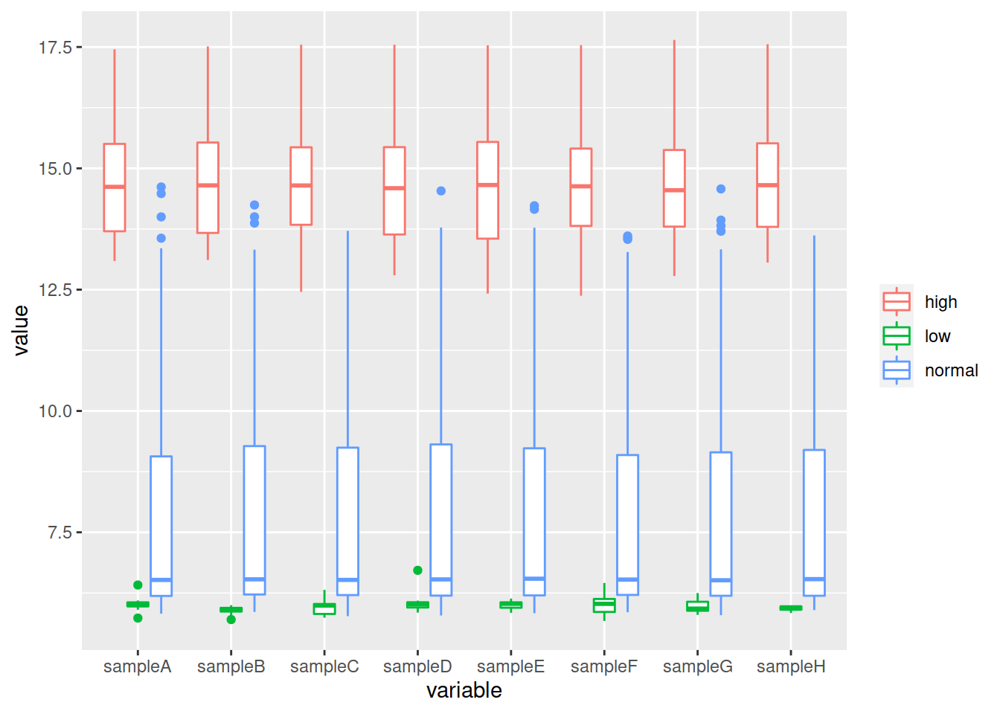
# Change font of legend text
boxp + theme(legend.title=element_blank(),
legend.text = element_text(colour="red", size = 8, face = "bold"))
# Put legend on the top of the plot
boxp + theme(legend.title=element_blank(),
legend.text = element_text(colour="red", size = 8, face = "bold"),
legend.position="top")# Rotate x-axis labels
boxp + theme(legend.title=element_blank(),
legend.text = element_text(colour="red", size = 8, face = "bold"),
legend.position="top",
axis.text.x = element_text(angle = 90))# Add a color to the plot's background
boxp + theme(legend.title=element_blank(),
legend.text = element_text(colour="red", size = 8, face = "bold"),
legend.position="top",
axis.text.x = element_text(angle = 90),
plot.background = element_rect(fill = "yellow"))19.11 Volcano plots
A volcano plot is a type of scatter plot represents differential expression of features (genes for example): on the x-axis we typically find the fold change and on the y-axis the p-value.
# Download the data we will use for plotting
download.file("https://raw.githubusercontent.com/biocorecrg/CRG_RIntroduction/master/de_df_for_volcano.rds", "de_df_for_volcano.rds", method="curl")
# The RDS format is used to save a single R object to a file, and to restore it.
# Extract that object in the current session:
tmp <- readRDS("de_df_for_volcano.rds")
# remove rows that contain NA values
de <- tmp[complete.cases(tmp), ]# The basic scatter plot: x is "log2FoldChange", y is "pvalue"
ggplot(data=de, aes(x=log2FoldChange, y=pvalue)) + geom_point()Doesn’t look quite like a Volcano plot…
Convert the p-value into a -log10(p-value)
# Convert directly in the aes()
p <- ggplot(data=de, aes(x=log2FoldChange, y=-log10(pvalue))) + geom_point()# Add more simple "theme"
p <- ggplot(data=de, aes(x=log2FoldChange, y=-log10(pvalue))) + geom_point() + theme_minimal()# Add vertical lines for log2FoldChange thresholds, and one horizontal line for the p-value threshold
p2 <- p + geom_vline(xintercept=c(-0.6, 0.6), col="red") +
geom_hline(yintercept=-log10(0.05), col="red")# The significantly differentially expressed genes are the ones found in the upper-left and upper-right corners.
# Add a column to the data frame to specify if they are UP- or DOWN- regulated (log2FoldChange respectively positive or negative)
# add a column of NAs
de$diffexpressed <- "NO"
# if log2Foldchange > 0.6 and pvalue < 0.05, set as "UP"
de$diffexpressed[de$log2FoldChange > 0.6 & de$pvalue < 0.05] <- "UP"
# if log2Foldchange < -0.6 and pvalue < 0.05, set as "DOWN"
de$diffexpressed[de$log2FoldChange < -0.6 & de$pvalue < 0.05] <- "DOWN"
# Re-plot but this time color the points with "diffexpressed"
p <- ggplot(data=de, aes(x=log2FoldChange, y=-log10(pvalue), col=diffexpressed)) + geom_point() + theme_minimal()
# Add lines as before...
p2 <- p + geom_vline(xintercept=c(-0.6, 0.6), col="red") +
geom_hline(yintercept=-log10(0.05), col="red")## Change point color
# 1. by default, it is assigned to the categories in an alphabetical order):
p3 <- p2 + scale_color_manual(values=c("blue", "black", "red"))
# 2. to automate a bit: ceate a named vector: the values are the colors to be used, the names are the categories they will be assigned to:
mycolors <- c("blue", "red", "black")
names(mycolors) <- c("DOWN", "UP", "NO")
p3 <- p2 + scale_colour_manual(values = mycolors)# Now write down the name of genes beside the points...
# Create a new column "delabel" to de, that will contain the name of genes differentially expressed (NA in case they are not)
de$delabel <- NA
de$delabel[de$diffexpressed != "NO"] <- de$gene_symbol[de$diffexpressed != "NO"]
ggplot(data=de, aes(x=log2FoldChange, y=-log10(pvalue), col=diffexpressed, label=delabel)) +
geom_point() +
theme_minimal() +
geom_text()
# Finally, we can organize the labels nicely using the "ggrepel" package and the geom_text_repel() function
# load library
library(ggrepel)
# plot adding up all layers we have seen so far
ggplot(data=de, aes(x=log2FoldChange, y=-log10(pvalue), col=diffexpressed, label=delabel)) +
geom_point() +
theme_minimal() +
geom_text_repel() +
scale_color_manual(values=c("blue", "black", "red")) +
geom_vline(xintercept=c(-0.6, 0.6), col="red") +
geom_hline(yintercept=-log10(0.05), col="red")